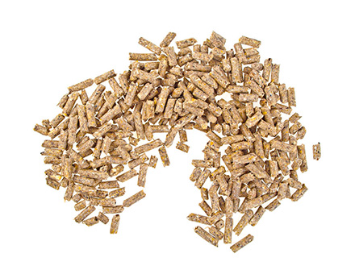

制作营销型网站之前需明确五大要素
当下不少企业都进行了营销型网站建设，大家对于营销型网站的功能了解也非常清楚，但是任有许多企业的营销型网站在上线之后，所取得的效果非常不理想，令企业非常苦恼。通过分析这些失败的网站，其实不难看出，主要原因还是由于在前期没有做好充分的准备工作，导致建站工作出现偏差，最终影响到了网站的质量。对此，小编认为，企业在制作营销型网站之前，需明确以下五大要素，方能使其质量更佳，效果更好。
明确网站的制作目的
企业既然选择制作网站，必然是有一定目的，这个是毋庸置疑的，但是实际情况却是，企业深知自己的目的，却没有将目的融入到网站当中，致使网站的功能和设计，都不具备帮助企业实现目标的能力，而不能帮助企业实现目标的网站，效果自然就会差。因此企业在制作网站之前，应该将自己的建站目的实施到网站当中，使网站的功能和设计等方面都完全以实现企业目的去进行，这样制作出来的网站，才能具有强烈的针对性和目的性，效果也会更强。
了解网站的目标用户
企业网站制作出来，就必须要投入市场，面对用户，而用户是否会喜欢这个网站，就直接决定了这个网站是取得成功还是失败。因此，企业在制作网站之前，就应该了解网站将要面对的用户，这样才能确定用户有什么样的需求，会对什么样的网站产生兴趣。然后企业在制作网站时，就可以根据用户的这些情况，制作和设计出一个能够满足用户需求，对用户有吸引力，令用户喜爱的网站来，如此网站才能帮助企业实现更好的效果。
确定网站的竞争优势
不管企业从事任何行业和产品，都会存在着一定的竞争，这是当下的市场环境所决定的，是无法改变的现实。在这样的情况下，企业只有在竞争中取得胜利，才能有更好的发展机会，而一旦竞争失败，将会对企业的发展造成非常大的损失。因此企业若要取得竞争胜利，就必须必同行更具优势，不管是在产品上，品牌上，服务上，还是在价格上，都必须要在网站当中体现出来，这样用户才会觉得你的网站更好，才会优先选择你的网站。

制作营销型网站之前需明确五大要素
2019-01-08当下不少企业都进行了营销型网站建设，大家对于营销型网站的功能了解也非常清楚，但是任有许多企业的营销型网站在上线之后，所取得的效果非常不理...
- 
浅谈APP应用运营推广当中的四大诀窍
2019-01-08随着移动互联网的不断发展，各大应用市场的APP应用技术越来越多，企业在进行APP开发之后，想要取得成功的难度就越来越大。在这样的情况下，唯有不断...

做好四个方面让你的APP应用效果更佳
2019-01-08当下从事APP开发的企业越来越多，但是能够取得成功的却寥寥无几，其主要原因就在于这些企业对APP应用缺乏了解，导致在开发的时候，以及上线之后没有...

浅谈确定营销型网站主题的三大原则
2019-01-08相信很多人都知晓，确定主题在企业营销型网站建设当中是非常重要的一个环节，是决定网站是否能够发挥出应有功效的决定因素。任何网站在制作之前，...